About Me
Guangchao Geng was born and raised in Jilin City, China, a popular tourist destination in Northeast China for its magnificent rime ice view on the banks of Songhua River. His father is a electrical engineer of Baishan hydropower plant and his mother is a physician.
After high school, he was admitted to Mixed Honors Class program in Zhejiang University (ZJU) in 2005 and joined Laboratory of Power System High Performance Computing at ZJU in 2007. In 2009, he earned his B.E. in electrical engineering with Chu Kochen Honors and started to pursue his Ph.D. in electrical engineering at ZJU, with the emphasis on power system stability and control. His advisor is Professor Quanyuan Jiang.
Currently, he is a visiting student in Dr. Ajjarapu's group at Iowa State University, working on a research project on stability constrained optimal power flow.
Albums
Baishan Hydro Plant
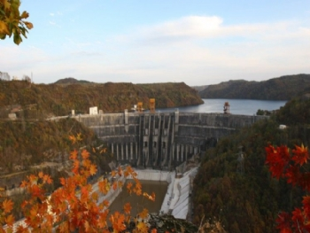 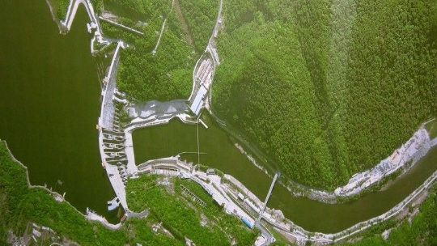 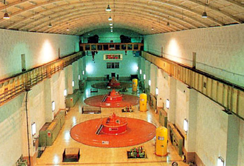 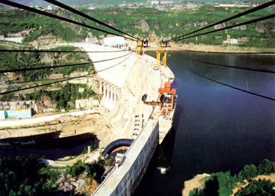Songhua River and Jilin City
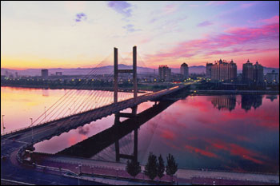 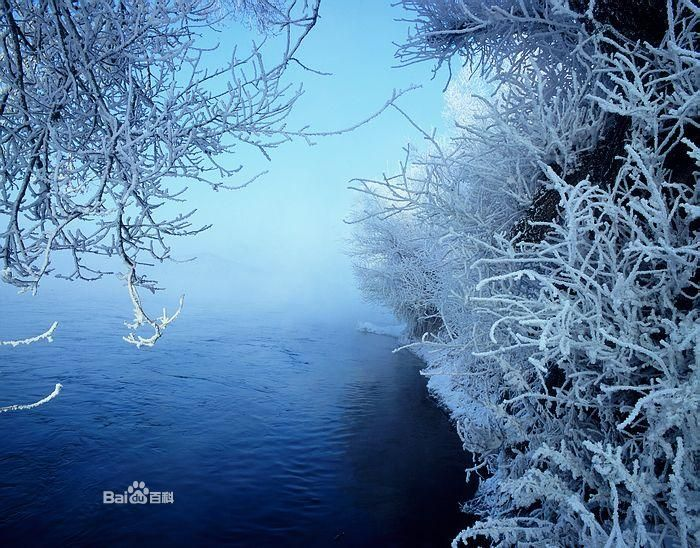 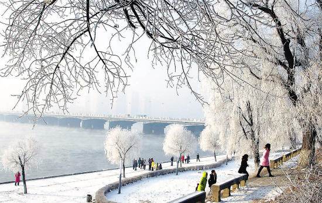 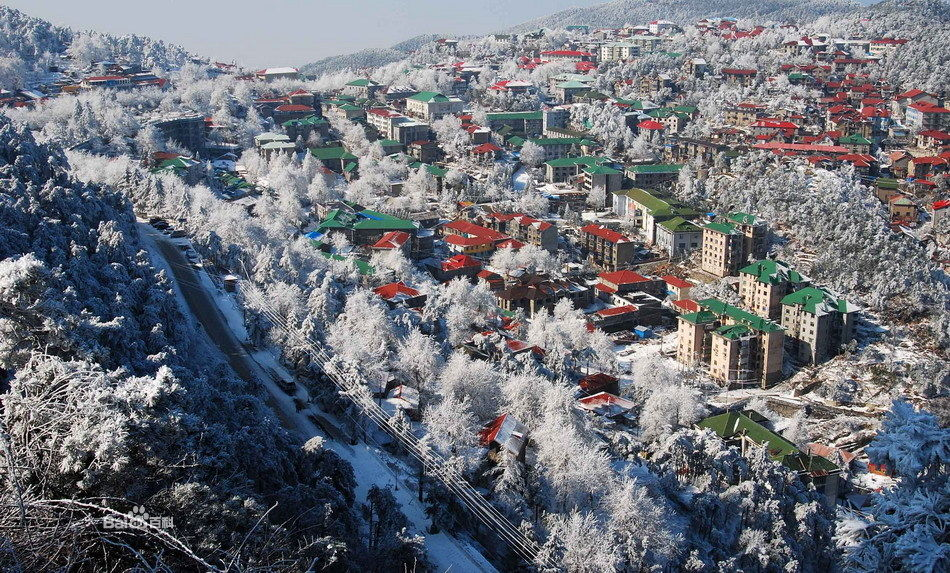Hangzhou and Zhejiang University
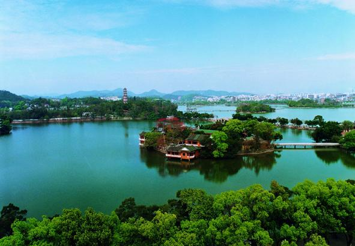 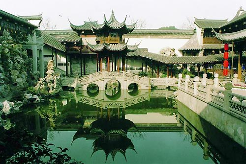 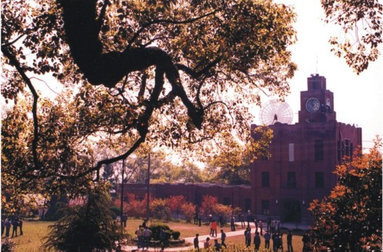
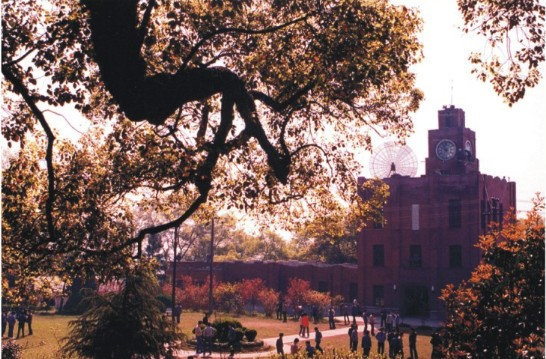
Ames and Iowa State University
 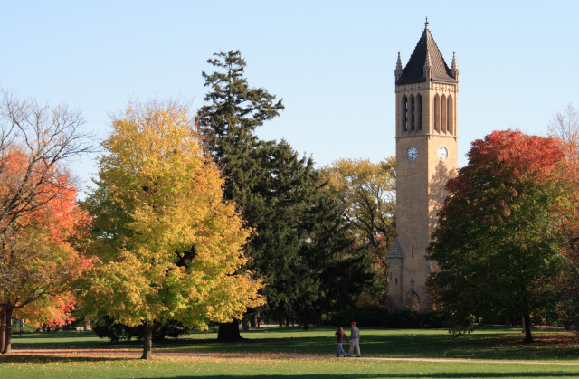
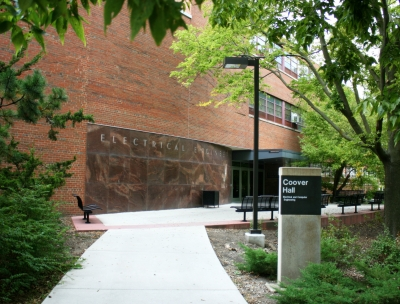
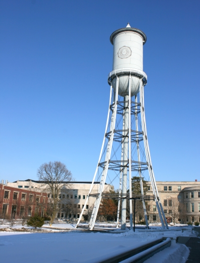
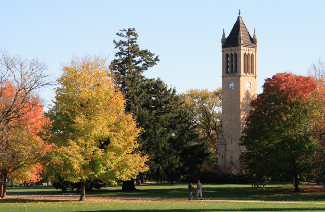
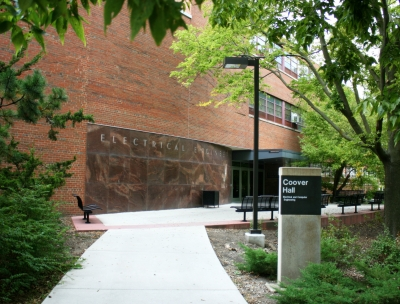
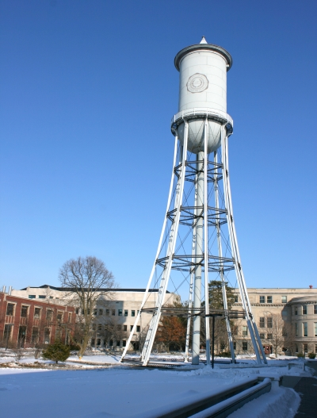